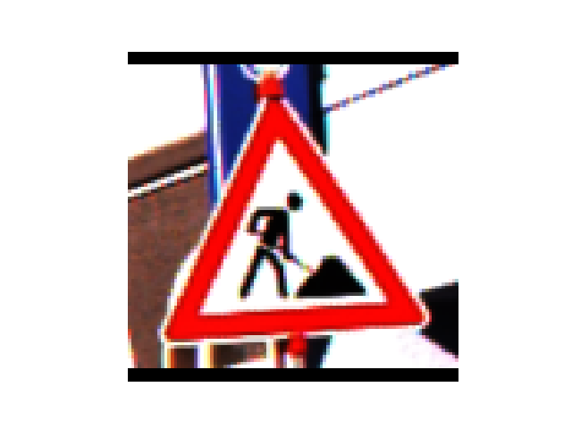
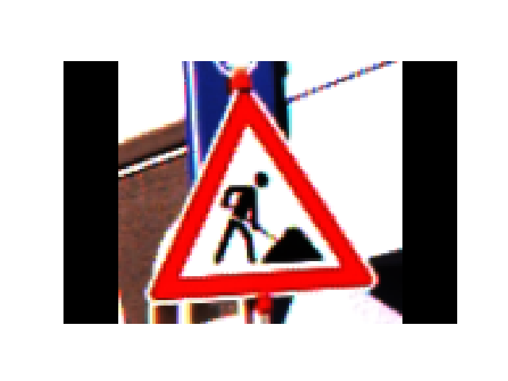

Jul 04, 2026 | 774 words | 8 min read
15.2.3. Task 3#
Learning Objectives#
Resize images using the Pillow library while maintaining their aspect ratio to prevent distortion.
Pad images to a specific size using the Pillow library.
Familiarize yourself with the Pillow library’s
resize(), andpad()methods and their parameters for interpolation, and color mode.
Task Instructions#
In this task you will create a Python program that resizes and pads images using the Pillow library. The program should be able to handle both RGB and grayscale images of any size as inputs.
For this, you must write two user-defined functions: resize_image and
pad_image. Your program should call these functions in the main function.
You will also need to reuse the load_img function you wrote in
Task 2 to load the image.
1. resize_image function#
Input arguments for this function are:
original_image_array: A NumPy array representing the original image (the output from yourload_imgfunction)new_size: A tuple representing the intermediate size (width, height) for the resized image
The function should return the resized image as a NumPy array. The function must resize
the image while maintaining its original aspect ratio to prevent distortion. Use the
Pillow library’s resize() method with bilinear interpolation for this (see
the
docs).
Hint
You will need to convert the input NumPy array image to a Pillow Image object and back to a NumPy array. Review Creating NumPy arrays, Py5 Materials, and the following links for documentation on how to do this:
2. pad_image function#
Input arguments for this function are:
resized_img_array: A NumPy array representing the resized image (the output from yourresize_imagefunction)target_size: A tuple representing the target size (width, height) for the padded final image
The function should return the padded image as a NumPy array. The function must pad the
resized image to fit within a \(100\times{}100\) pixel canvas. Use the Pillow
library’s pad() method for this (see the Materials).
3. Main Function#
The main function of your program should call the load_img,
resize_image, and pad_image functions with the outputs matching the
examples below.
Note
The resize_image and pad_image functions that you write, must be
able to handle RGB and grayscale image arrays as inputs. This is shown in the examples
below.
You must also reuse the load_img function from Task 2.
Ask the user to input the file path of an image they want to process. Use the
load_imgfunction you wrote in Task 2 to load the image.Once the
load_imgfunction returns the image as a NumPy array with pixel values as floating point in the range \([0.0, 1.0]\), scale the pixel values to the range \([0, 255]\) and convert the data type to unsigned 8-bit integer (uint8) before passing it to theresize_imagefunction. This is necessary because the Pillow library expects image data in this format. You use the following code in the main function:# Assuming img_array is the output from the load_img function img_array = (img_array * 255).astype(np.uint8)
Ask the user to input the target size for resizing the image in a comma separated format (width, height). Parse this input to create a tuple that can be passed to the
resize_imagefunction.Calculate the aspect ratio of the original image dimensions and the target image dimensions using the formula:
(15.4)#\[\text{Original Aspect Ratio} = \frac{\text{Original Width}}{\text{Original Height}}\](15.5)#\[\text{Target Aspect Ratio} = \frac{\text{Target Width}}{\text{Target Height}}\]Based on the aspect ratios, determine the intermediate dimensions for resizing the image while maintaining its original aspect ratio, preventing distortion. Consider the following two scenarios:
If the original dimensions are wider than the target dimensions such that \(\text{Original Aspect Ratio} \geq \text{Target Aspect Ratio}\), the resized image will have:
(15.6)#\[ \begin{align}\begin{aligned}\text{New Width} &= \frac{\text{Target Width}}{\text{Original Aspect Ratio}}\\\text{New Height} &= \text{Target Height}\end{aligned}\end{align} \]Conversely, if the original dimensions are narrower than the target dimensions such that \(\text{Original Aspect Ratio} < \text{Target Aspect Ratio}\), the resized image will have:
(15.7)#\[ \begin{align}\begin{aligned}\text{New Width} &= \text{Target Width}\\\text{New Height} &= \frac{\text{Target Height}}{\text{Original Aspect Ratio}}\end{aligned}\end{align} \]
Hint
You may need to round down the calculated intermediate dimensions to the nearest
integer before passing them to the resize_image function, as image
dimensions must be integers. You can use the built-in int() function for
this.
Call the
resize_imagefunction with the original image and the calculated intermediate dimensions to get the resized image.Then, use the
pad_imagefunction with the resized image and the user’s target size to get the final padded image.Print the dimensions of the original image, the resized image, and the final padded image to verify that the resizing and padding were done correctly. The print statements must be made in the main function, not in the user-defined functions.
Display the final resized and padded image using the
Matplotliblibrary’simshow()method.
Use the files provided in the Table 15.8 to test your code.
Image File Name |
Description |
|---|---|
A color image |
|
A color image |
|
A grayscale image |
{kind=link}
{kind=link}
{kind=link}
Sample Output#
Use the values in Table 15.9 below to test your program.
Case |
image_path |
target_size |
|---|---|---|
1 |
ref_col_raw0.png |
100, 100 |
2 |
ref_col_raw0.png |
150, 100 |
3 |
ref_col_raw2.png |
100, 100 |
4 |
ref_col_raw2.png |
100, 120 |
5 |
ref_gry_raw.png |
50, 50 |
Ensure your program’s output matches the provided samples exactly. This includes all characters, white space, and punctuation. In the samples, user input is highlighted like this for clarity, but your program should not highlight user input in this way.
Case 1 Sample Output
$ python3 py5_team_3_teamnumber.py Enter the path of the image you want to clean: ref_col_raw0.png Enter the target width and height: 100, 100 Image shape before cleaning: (121, 112) Image shape after resizing: (100, 92) Image shape after cleaning: (100, 100)

Fig. 15.8 Case_1_output_ref_col_raw0.png#
Case 2 Sample Output
$ python3 py5_team_3_teamnumber.py Enter the path of the image you want to clean: ref_col_raw0.png Enter the target width and height: 150, 100 Image shape before cleaning: (121, 112) Image shape after resizing: (108, 100) Image shape after cleaning: (150, 100)

Fig. 15.9 Case_2_output_ref_col_raw0.png#
Case 3 Sample Output
$ python3 py5_team_3_teamnumber.py Enter the path of the image you want to clean: ref_col_raw2.png Enter the target width and height: 100, 100 Image shape before cleaning: (52, 53) Image shape after resizing: (98, 100) Image shape after cleaning: (100, 100)
Fig. 15.10 Case_3_output_ref_col_raw2.png#
Case 4 Sample Output
$ python3 py5_team_3_teamnumber.py Enter the path of the image you want to clean: ref_col_raw2.png Enter the target width and height: 100, 120 Image shape before cleaning: (52, 53) Image shape after resizing: (100, 101) Image shape after cleaning: (100, 120)
Fig. 15.11 Case_4_output_ref_col_raw2.png#
Case 5 Sample Output
$ python3 py5_team_3_teamnumber.py Enter the path of the image you want to clean: ref_gry_raw.png Enter the target width and height: 50, 50 Image shape before cleaning: (50, 48) Image shape after resizing: (50, 48) Image shape after cleaning: (50, 50)
Fig. 15.12 Case_5_output_ref_gry_raw.png#
Save the flowcharts for this task in py5_team_3_teamnumber.pdf You will also need to include these flowcharts in your final report.
Deliverables |
Description |
|---|---|
py5_team_3_teamnumber.py |
Your completed Python code. |
py5_team_3_teamnumber.pdf |
Flowchart(s) for every part of this task. |